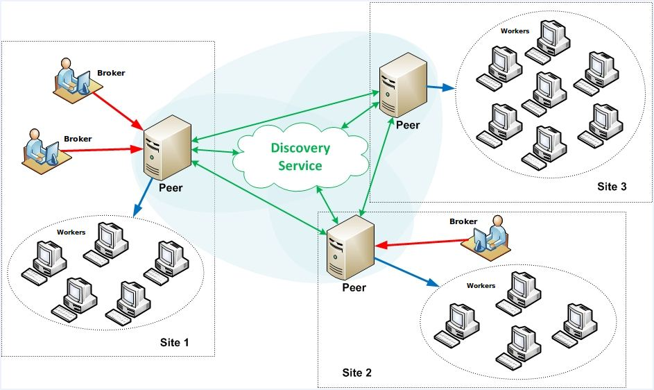
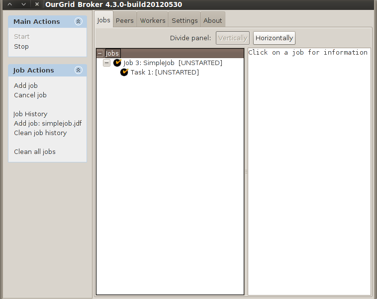
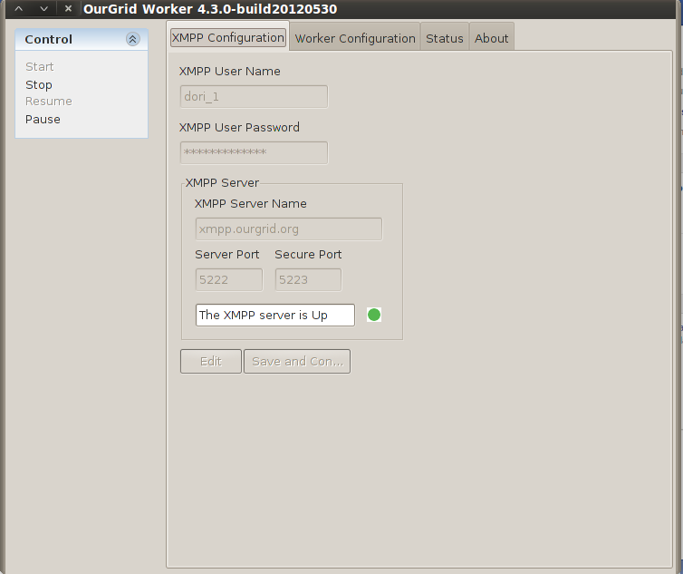
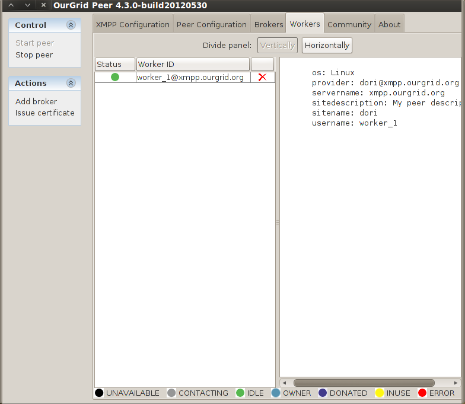
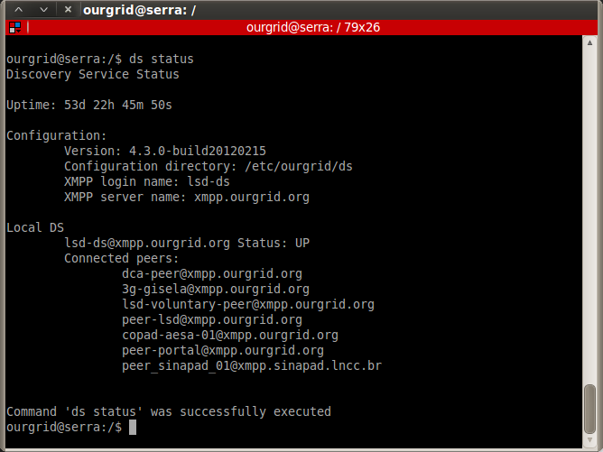

2.1. Broker
2.2. Worker
2.3. Peer
2.4. Discovery Service
OurGrid is an open source grid middleware based on a peer-to-peer architecture. This middleware enables the creation of P2P(peer-to-peer) computational grids, and since, its first release in December 2004, it has been used by hundreds of users to speed up the execution of Bag-of-Tasks applications. These include parameter sweep simulations, image rendering, optimization algorithms, and many others.
Anyone can freely and easily join it to gain access to large amount of computational power and run parallel applications. This computational power is provided by the idle resources of all participants, and is shared in a way that makes those who contribute more get more when they need.
OurGrid
In P2P grids enabled by OurGrid, computing and storage resources originated from spare resources (idle CPUs and free disk space) are provided by a whole community of grid participants, and are shared in such a way as to make those who have contributed the most to get the most out of the grid whenever they need it.
OurGrid uses XMPP as its communication protocol. The Extensible Messaging and Presence Protocol (XMPP) is an open technology for real-time communication, which powers a wide range of applications including instant messaging, presence, multi-party chat, voice and video calls, collaboration, lightweight middleware, content syndication, and generalized routing of XML data. It allows federation, and it is internet-friendly, once several services can use the same XMPP server, so that the administrator just need to add a single firewall rule.
The software is written in Java, allowing any resource capable of running a Java Virtual Machine to be tapped on to the grid.
The OurGrid has four main components:
The figure below shows the main structure of the OurGrid.

Figure 1 Overview of OurGrid.
The user interacts with the Broker in order to submit and monitor jobs, the Worker runs in the machines that will execute the tasks, and the Peer is responsible for on-site resource discovery.
As depicted in the figure above, Brokers and Workers connect to a Peer, creating an OurGrid Site. The Discovery Service enables the communication between OurGrid sites connected to it, so that they can share their resources among them.
More details about each component can be found on their respective sections.
The Broker is the OurGrid's user frontend. With the Broker, the user can submit and monitor jobs. An OurGrid job is described in a JDF file, which is explained here.
When a job is submitted, the Broker asks its Peer for Workers, so it can schedule the job’s tasks. Besides scheduling tasks to run on the Workers, it is also the Broker's role to stage data to/from Workers before and after the execution of tasks.
The screenshot below shows the job monitoring panel on the Broker’s GUI:

Figure 2 Screenshot of the Broker's GUI status panel.
The OurGrid Worker runs on the machines that will be available for task execution. The Worker provides necessary access and file transfer features to the Broker.
Another important feature the OurGrid Worker provides is virtualization. When virtualization is enabled, the Worker will execute OurGrid tasks inside a virtual machine, creating a sandboxed environment isolated from the host machine and without network. This approach avoids malicious tasks to access the host’s file system or to make the host part of a DDoS attack.
We provide two types of workers:
The following screenshot is an example of the Worker’s GUI.

Figure 3 Screenshot of the Broker's GUI configuration tab.
From the user's perspective, a Peer is a Worker provider, i.e., a network service that dynamically provides Workers for task execution. From an administrative point of view, a Peer determines how and which machines can be used as workers.
A Peer is also able to communicate with other Peers, via the Discovery Service, in order to request additional resources, in case the Workers from its site aren’t enough to satisfy Brokers’ requests.
The screenshot below depicts the Worker's management panel on the Peer’s GUI.

Figure 4 Screenshot of the Worker's tab on the Peer's GUI.
The OurGrid Discovery Service is responsible for connecting multiple OurGrid sites, so that several Peers can interact and exchange computational resources.
The screenshot belows depicts a status query in a Discovery Service.

Figure 5 Screenshot of the DS status command result.
The accounting of this resource sharing is stored as favours in a distributed fashion, and it is used by the Network of Favours towards a fair resource exchanging.
To encourage resource contribution to the network, OurGrid uses a resource allocation mechanism based on reputation called Network of Favours. Peers that donate more resources in the community have a better reputation on it, and are prioritized when they request resources. This way, there is an incentive for each Peer to contribute as much as possible to the system. Also, this policy also tries to discourage freeriders - the Peers that consume the resources available in the community but never pay back by donating resources.
To identify Peers in the the Network of Favours, OurGrid uses DER certificates based on the X.509 Public Key Infrastructure.
Besides maintaining the OurGrid Middleware, we keep an active OurGrid community at the UFCG. You can connect your Peer to our Discovery Service (lsd-ds@xmpp.ourgrid.org) to share your site’s resources and help our community to keep growing. You can see our community status at the status page.
If don’t run an OurGrid site and you still want to contribute to our community, you can install a standalone Worker on your machine and connect to our Voluntary Peer, which is a Peer any Worker can connect to. Just set the property worker.peer.address to lsd-voluntary-peer@xmpp.ourgrid.org and your Worker will be connected to our Peer.
Also, if you want to submit jobs to our OurGrid community and you don’t have a Broker running on your machine, you can use the OurGrid Portal for that.
{kind=link}
{kind=link}
{kind=link}
{kind=link}
{kind=link}